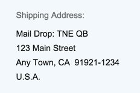

Address Facet in Sections
If you add a UI.ReferenceFacet that points to an address annotation, an address facet is displayed in the object page sections or in a quick view.
It shows the label of the UI.ReferenceFacet and,
below, only the label property of the address annotation. Therefore, the label property
should contain the whole formatted address, with \n for new lines.
Example value for the label property: "Mail Drop: TNE QB\n123 Main Street\nAny Town, CA 91921-1234\nU.S.A.". This is shown as follows:
The address facet can be used in various places:
-
As a separate section
<Record Type="UI.ReferenceFacet"> <PropertyValue Property="Label" String="Communication Address" /> <PropertyValue Property="Target" AnnotationPath="@Communication.Address" /> </Record>
-
As part of a field group within a section and in a quick view with smart link navigation
<Annotation Term="UI.FieldGroup" Qualifier="GeneralInformation"> <Record> <PropertyValue Property="Data"> <Collection> <Record Type="UI.DataFieldForAnnotation"> <PropertyValue Property="Label" String="Communication Address" /> <PropertyValue Property="Target" AnnotationPath="@Communication.Address"/> </Record> </Collection> </PropertyValue> <PropertyValue Property="Label" String="Product Information"/> </Record> </Annotation>